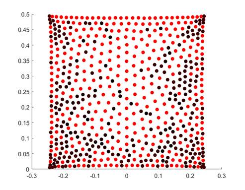
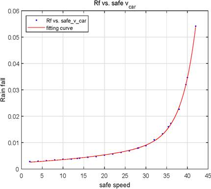

Journeys
A simple simulation for Manhattan traffic
In this project, a simple traffic grid is built to mimic the traffic system at Manhattan in New York City. Manhattan has 214 numbered streets and 11 numbered avenues. The streets go in the East-West direction while the avenues go from South-North. The directions here are all aligned with the Hudson River. In real Manhattan, some streets and avenues can go in both directions. To simplify the problem, only alternating direction one-way streets and avenues are considered. The motivation of this project is to have a descriptive model to the Manhattan traffic flow and some qualitative insights about the capacity of the grid system.
Figure 1 Distribution of car number in the system with different incoming rate.
Figure 2 The limit of incoming rate when congestion occurs.
Project page: Eleven7825/manhattan: A simple simulation for Manhattan traffic
Report: https://github.com/Eleven7825/manhattan/blob/main/manhattan.pdf
Comparison Between Non-deterministic Model and Deterministic Model for Malaria and Sickle-Cell Hemoglobin Gene
In this project, I explore the long-term behavior of the Sickle-Cell gene and malaria. I first introduce the mathematical model and its implementation in MATLAB. The model has two versions-the deterministic version and the non-deterministic version. I find that with the default value for initial susceptible, infected and resistant, the deterministic model and the non-deterministic model have similar behavior while behave differently when the initial infected population is small. Moreover, as the infection rate of malaria gets larger, the ratio of resistant to malaria also gets larger as the result of natural selection.

(C) As two diseases developed, the growth rate (D) The population of susceptible, infected, and
for the whole population settled into a stable value. resistant settle down to exponential growth.
Project page: https://github.com/Eleven7825/malaria-sickle-cell
Report: https://github.com/Eleven7825/malaria-sickle-cell
Simulated Fungi Decomposition System
In order to incorporate the fluctuations of the environment into our model, we design the Environment Fungi Coefficient Abstraction (EFCA) to quantify the impact of PH, temperature, moisture and light intensity to the fungus communities. We set up the environment index to precisely determine the growth rate, death rate and decomposition rate of the specific fungus community. Based on biological knowledge and mathematical principles, we justify the functions we choose for the three rates are suitable through data fitting and error testing using MATLAB tool packages.

(E) Two different kinds of fungi compete to survive
Project page: Eleven7825/fungi: 2021 mcm a
Report: fungi/2112048.pdf at main · Eleven7825/fungi
Simulations on Adapted Thomson Problem with Different Frames
Thomson’s problem is determined the ground state of N electric charges on constrained in a sphere shell given the repelling effect given by Coulomb’s law. By comparing the simulation result and continuum theory, M. Bowick et al. find out the crystalline structure in the ground state for the Thomson problem. In the meanwhile, Y. Levin and J. J. Arenzon generalized the Thomson problem replacing the sphere shell with a sphere. They found that with a small amount of charge, the charges are likely to go to the surface while for a large amount of charge, there are some charges that stay in the middle of the sphere. Our work includes the two-dimensional simulation on the Thomson problem and the three-dimensional simulation on the generalized Thomson problem. While the original Thomson problem assumes on a sphere shell which is a two-dimensional object, we explore the 2d square frame set up. For 3d simulation, the charges are allowed to move inside of the sphere.

(F) Crystal structure electric charges form (G) 3d simulation result using 12 electrons, each
in a 2d frame. vertex represents an electron.
Project page: https://github.com/Eleven7825/electron-problem-3d
https://github.com/Eleven7825/electron-problem
Report: https://github.com/Eleven7825/electron-problem-3d/blob/main/electron_problem%20_final.pdf
A Model to Predict the Maximum Car Speed in the Rain
The speed that a car can maintain on rainy days depends on many factors. This project will first introduce a model to quantify the visibility of the driver using the ratio between the surface area of all raindrops on windshield and the area of the windshield. In addition to driver’s comfortability of visibility, we also take the sudden brake, sleep-deprived driving, road condition and light change, into the safe speed consideration. In this project, we build a model to compute the safe speed of the car under real-life considerations by combining mathematical and physical knowledge to provide a concrete and useful insight into this problem.

(H) Our final result - relationship between the (I) The amount of rain will recieve with different car
safe speed and the precipitation. speeds and precipitations.
Project Page: https://github.com/Eleven7825/Rainfall_simulator
Report: https://github.com/Eleven7825/Rainfall_simulator/blob/main/main.pdf
A Flop Count Tool with an Example in PLU Factorization
We develop a new flop tool which can help to count floating-point operation(flops) in MATLAB/GNU Octave. The first two sections describe the flops and PLU factorization. In the following sections, we introduce the PLU factorization — a method for solving linear equations. We discuss several possible ways to count flops on a PLU factorization script in MATLAB/Octave. One way we tried is using the flop tool developed by Hang Qian. Although his tool does not give us the correct result due to its limitation on counting operations involving varying variable sizes, his code gives the flop count formulas we needed in developing the new tool. Our new tool is compatible with GNU Octave and it is licensed under GNU LGPL.
Report: https://github.com/Eleven7825/flopTool/blob/master/flop20count20tool20withPLUexample.pdf
An Overview on Linear Solvers
The Conjugate Gradient Method (CG) is a prevalent method for solving linear systems. In this report, we include a self-contained description of CG and Steepest Descent (SD) without introducing Krylov space. We also describe the preconditioning and its application on CG (PCG). We then compare SD, CG, PCG by considering their iterations. We find that due to roundoff error, the iteration number can go beyond the theoretical upper bound for SD. Finally, we compare those gradient methods with PLU factorization. The resulting linear solver is given in the conclusion part.
(J) Iterations required for CG and SD algorithm to converge under different condition numbers
Report: https://github.com/Eleven7825/solveLinearSystem/blob/master/AnOverviewonLinearSolvers.pdf
Finding Few Largest Eigenvalues
Power Method (PM) allows us to find the largest eigenvalue of real square matrices. By changing the algorithm of PM, the resulting algorithm – Inverse Power Method (IPM) enables us to find the eigenvalues other than the largest one. In this report, we firstly describe the IPM and code it in MATLAB/Octave. To test the new function of IPM, we elaborate on how IPM allows us to find eigenvalues closest to a point for symmetric matrices. We then move on to elaborate on how we find the few largest eigenvalues for symmetric matrices using the IPM and the searching scheme we devised. The method succeeded in finding all the 10 largest eigenvalues of 30 by 30 random symmetric positive matrices in 98.4% sampled randomly.
Report: https://github.com/Eleven7825/IPM/blob/main/Finding%20few%20largest%20eigenvalues.pdf